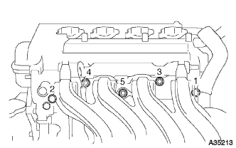

ノックコントロール センサ 取り外し |
| 1. 冷却液(トヨタ純正スーパーLLC)抜き取り |
ラジエータキヤツプを開ける。
ラジエータドレーンコツクプラグをゆるめ冷却液を抜き取る。
| 2. フューエルベーパフィード ホース NO.1切り離し |
スロツトルボデーASSYからフユーエルベーパフイードホースNo.1を切り離す。
クランプのかん合をはずし、フューエルベーパフィードホースNo.1をエアークリーナーキャップから切り離す。
| 3. エア クリーナASSY取りはずし |
エアクリーナキヤツプとエアクリーナホースNo.1を取りはずす。
エアクリーナフイルタエレメントを取りはずす。
ボルト4本をはずし、エアクリーナケースとエアクリーナインレツトNo.1およびエアクリーナインレツトNo.2を取りはずす。
| 4. シリンダヘッド カバー NO.2取りはずし |
 |
ナット４個をはずし、シリンダヘツドカバーNo.2を取りはずす。
| 5. トランスミッションオイルフィラ チューブSUB-ASSY取りはずし |
オイルレベルゲージをオイルフイラチユーブから取りはずす。
ブリーザホースをオイルフイラチユーブから取りはずす。
 |
ボルト2本をはずし、オイルクーラーチユーブクランプおよびオイルフイラチユーブをトランスアクスルASSYから取り外す。
Oリングをオイルフイラチユーブから取りはずす。
| 6. アクセルレータ コントロールケーブルASSY切り離し |
ナットを緩めてアクセルレータコントロールケーブルASSYをアクセルレータコントロールケーブルブラケツトから切り離す。
| 7. ウォータバイパス ホース切り離し |
| 8. ウォータバイパス ホース NO.2切り離し |
| 9. スロットル ボデーASSY取りはずし |
スロツトルポジシヨンセンサおよびアイドルスピードコントロールバルブのコネクタを切り離す。
 |
ボルトおよびナット2個をはずし、アクセルレータコントロールケーブルブラケツトおよびスロツトルボデーASSYを取りはずす。
インテークマニホルドよりガスケツトを取りはずす。
| 10. ウォータ フィラSUB-ASSY取りはずし |
 |
ラジエータインレツトホース、ラジエータホースNo.3およびラジエータリザーブタンクホースを切り離す。
ボルト2本をはずし、ウオータフイラを取りはずす。
| 11. ベンチレーション ホース切り離し |
インテークマニホールドからベンチレーシヨンホースを切り離す。
| 12. ユニオン トゥー コネクタチューブ ホース切り離し |
インテークマニホールドからユニオンツウコネクタチユーブホースを切り離す。
| 13. インテーク マニホルド取りはずし |
インテークマニホルドからワイヤハーネスを切り離す。
|  |
図の順序でボルト３本およびナット２個をはずし、インテークマニホールドを取りはずす。
インテークマニホールドからインテークマニホルドガスケットを取りはずす。
| 14. ノックコントロール センサ取りはずし |
コネクタを切り離す。
 |
SSTを使用して、ノツクコントロールセンサを取りはずす。